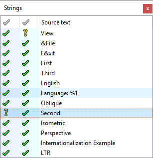

Selecting strings to translate
The Strings view lists all the translatable strings in the current context and their translation acceptance state. Select a string to view and edit it in the translation area.

Click the icon in front of a string to change its translation acceptance state. A tick mark, green or yellow, means the string has an accepted translation. A question mark means either that the translation does not exist or you have not accepted it.
The following icons indicate the current translation state for each string:
| State | Icon | Description |
|---|---|---|
| Accepted/Correct | The source string has a translation (possibly empty). You accepted the translation, and it passes all the validation tests. Click the icon to revoke acceptance of the translation. The state becomes Not Accepted if the string has a translation or No Translation if the translation is empty. If lupdate changes the contents of a string, its acceptance state becomes Not Accepted. | |
| Accepted/Warnings | You accepted the translation, but it does not pass all the validation tests. The Warnings view shows where it failed. If you click the icon to revoke acceptance of the translation, the state becomes Validation Failures. | |
| Not Accepted | The string has a translation that passes all the validation tests, but you have not yet accepted the translation. Click the icon or press Ctrl+Enter to accept the translation. The state becomes Accepted/Correct. | |
| No Translation | The string does not have a translation. If you click the icon to accept the empty translation, the state becomes Accepted/Correct. | |
| Validation Failures |  | The string has a translation, but the translation does not pass all the validation tests. The Warnings view shows the validation test failures. Click on the icon or press Ctrl+Enter to accept the translation even with validation failures. The state becomes Accepted/Warnings. Usually, you should fix the causes of the validation failures. The state will automatically become Not Accepted when you fix all failures. |
| Obsolete | The string is obsolete. It is no longer used in the context. See Using lupdate for instructions on how to remove obsolete messages from the file. |